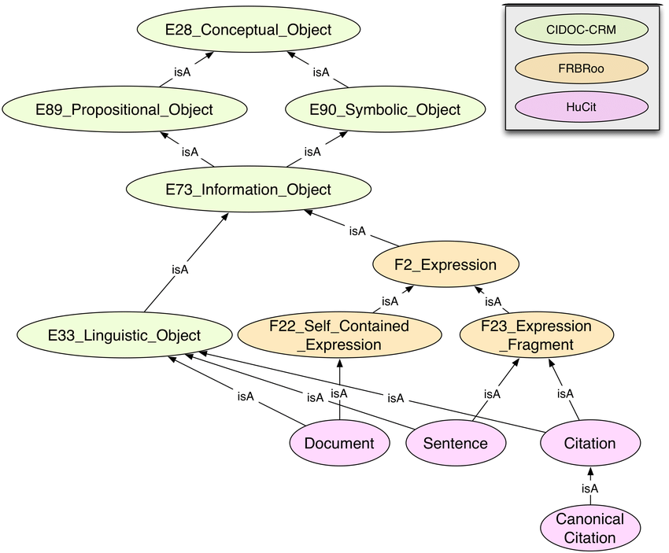

Projects / all / Digital Humanities / AI & Knowledge Graphs / Data & ontologies
HuCit Ontology
An ontology aimed at the formal representation of humanities citation structures.
- Years
- 2013
- Status
- Completed
- Role
- Ontology design, together with Matteo Romanello.

HuCit is a formal ontology aimed at the formal representation of humanities citation structures.
The key idea here derives from the fact that while in the sciences a citation is normally represented in the form of a relation between two publications (and often that’s all is needed to generate all sorts of interesting citation network analysis algorithms), in the humanities (and especially in classics) citations are normally treated by scholars with a much higher attention to details.
For example, citations may exhibit a particular style which scholars want to study and classify (for example when faced with ancient citations) to the purpose of better understanding and contextualizing the meaning of a citation. Secondly, in classics we have interesting ‘phenomena’ like canonical citations: these are citations that do not point at any publication in particular, but at an idealized version of a classic text (eg Homer’s Iliad) which is used as a reference systems for all subsequent editions of that text. Canonical citations fundamentally act as a reference to a point in a (textual) coordinate system which is agreed upon by the scholarly community – and thus needs to be followed so to facilitate discussion in that community. So, in a nutshell, the HuCit ontology is providing the representational primitives needed to support computational reasoning about the ‘humanistic’ way of working with citations.
Finding out more
The slides below, taken from the Digital Humanities 2011 conference, will give you more details about this work. Please get in touch with me or Matteo Romanello for more info on how to get involved.